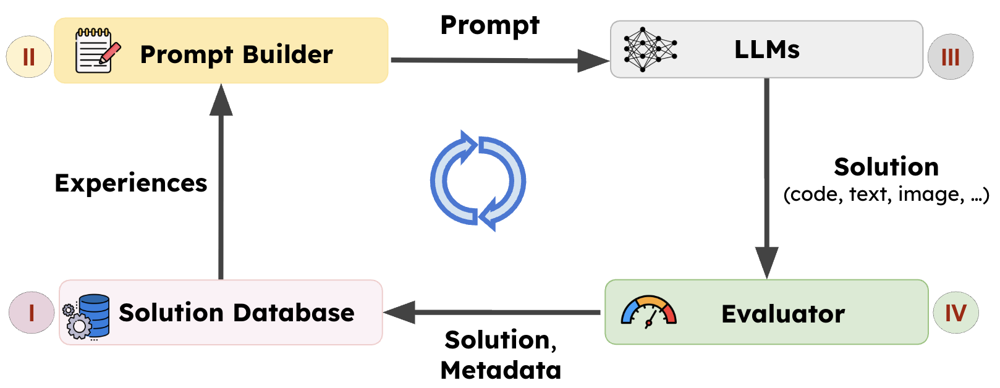
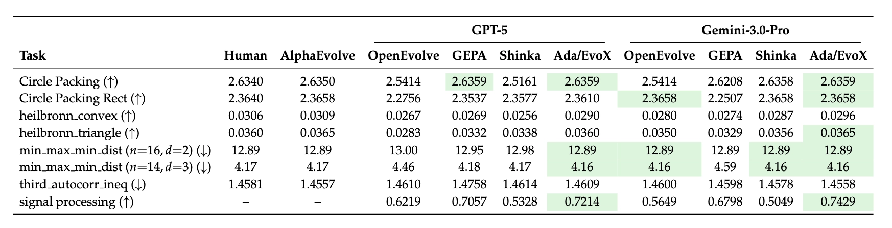
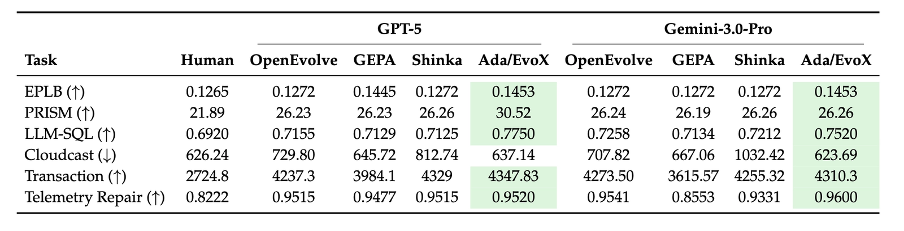
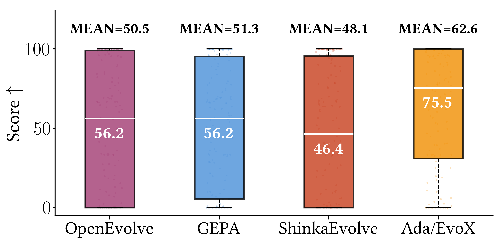
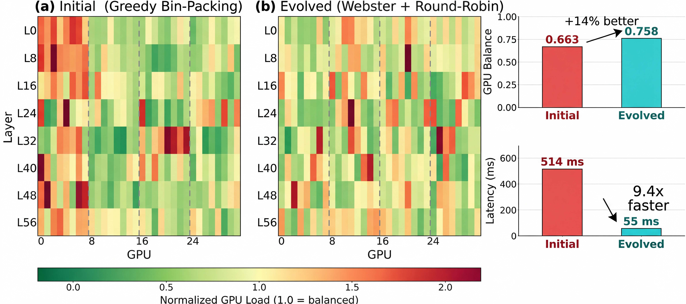
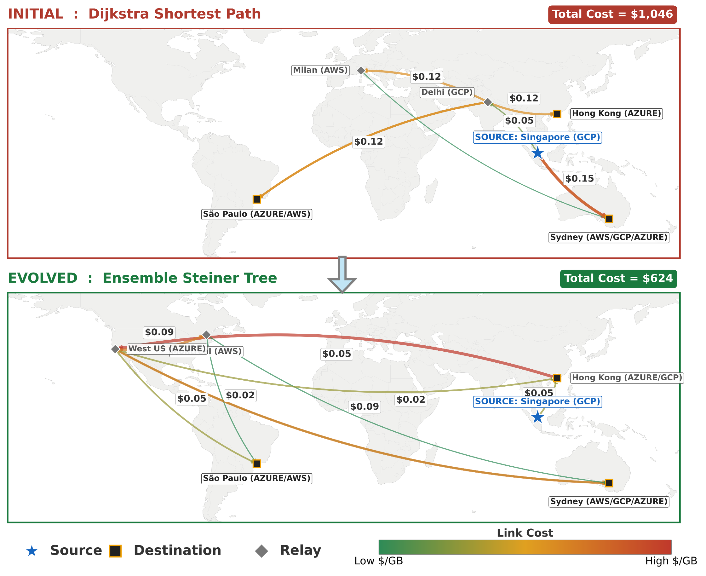
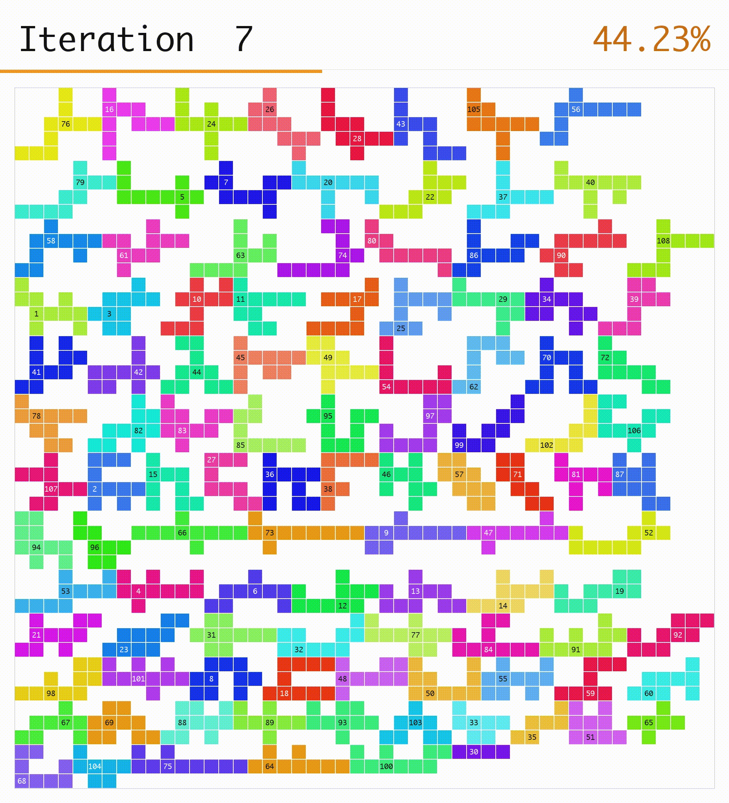

📝 LLM-driven evolutionary search is emerging as a powerful approach for discovering algorithms and designs, but existing frameworks are difficult to reuse, extend, and compare.
We introduce SkyDiscover, a flexible and modular framework for AI-driven scientific and algorithmic discovery, providing a unified interface for running and comparing methods across 200+ real-world optimization tasks. Using SkyDiscover, we implement two adaptive evolutionary algorithms about 2.5K LoCs, achieving:
- 🏆 Best open-source performance: improving median scores by ~34% on 172 Frontier-CS programming problems over OpenEvolve, GEPA, and ShinkaEvolve.
- 💪 Matching or exceeding AlphaEvolve and human SOTA: on 8 math and 6 systems optimization tasks.
- 🚀 Concrete discoveries with real impact: 41% lower cross-cloud transfer cost, 14% better GPU load balance for MoE serving, and 29% lower KV-cache pressure via GPU model placement.
Explore and build with us!
Background: The Rise of AI-Driven Discovery
A defining capability of intelligent systems is the ability to learn from experience. Rather than producing a single solution, modern LLM-driven systems can iteratively improve by building on prior discoveries.
One powerful paradigm is LLM-driven search pioneered by AlphaEvolve. In this approach, the system maintains (I) a population of prior solutions in a solution database, samples or searches through them to (II) construct prompts incorporating past experiences that guide the (III) generation of new candidates. These candidates are then (IV) evaluated, and the resulting solutions, along with metadata such as scores, are added back into the population. Together, these components form a closed discovery loop, as illustrated in the figure below.

Many open-source AI-driven discovery frameworks, including AlphaEvolve, OpenEvolve, GEPA, and ShinkaEvolve, have demonstrated the promise of this paradigm. For example, AlphaEvolve discovered new algorithms for matrix multiplication and enabled scheduling optimizations in Google's data centers. GEPA learned reusable agent skills, achieving near-perfect Claude Code task completion, and optimized agent architectures across diverse domains.
Together, these results establish LLM-driven search as a powerful approach for scientific and algorithmic discovery.
Challenge: Lack of Modular Implementations
Despite sharing similar architecture, existing frameworks are implemented monolithically and are difficult to extend or compare. At a high level, most systems follow the same loop: learn from prior solutions, construct prompts, generate candidates, evaluate them, and update the population. However, these components are tightly coupled in implementation. For example:
- OpenEvolve: Uses MAP-Elites–based selection in the solution database with fixed prompt templates.
- GEPA: Couples Pareto-front selection with recombination and mutation operators in prompt construction.
- ShinkaEvolve: Integrates novelty control in the solution database and adaptive LLM selection for generation.
Modifying individual parts, such as introducing a new selection strategy, typically requires modifying the core system. Moreover, each framework is built and evaluated using different codebases, benchmarks, and experimental setups, making fair comparison difficult.
⚠️ This lack of modularity slows progress:
- Innovation is costly: New ideas often require modifying monolithic systems.
- Infrastructure is duplicated: Shared components (e.g., solution database, progress tracking, and benchmarking pipelines) are repeatedly reimplemented.
SkyDiscover: A Flexible Framework for AI-driven Scientific and Algorithmic Discovery
To address these limitations, we built SkyDiscover, a modular and flexible framework for AI-driven discovery, designed around two key goals:
- Generality: Support diverse discovery algorithms and enable unified evaluation on shared benchmarks.
- Flexibility: Enable rapid implementation and evaluation of new discovery techniques without modifying a monolithic system.
A More Extensible Architecture

As shown above, SkyDiscover follows the same high-level evolutionary loop as prior systems, but exposes each stage as a reusable, more extensible component. The loop has four parts:
- Context Builder. Extends the prior prompt builder to construct prompts that integrate the problem context with knowledge accumulated from prior generated solutions and human feedback.
- This includes incorporating past solutions directly or extracting higher-level signals such as ideas, guidance, reflections, and strategy suggestions from past solutions and human input.
- Solution Generator. Produces candidate solutions via LLM calls, but also provides the option of tool interaction with the environment (e.g., reading codebases).
- Evaluator. Scores candidate solutions and logs feedback, generating metadata (e.g., scores, logs, artifacts), which are stored back into the solution database for future iterations.
- Solution Selector. Maintains the solution database and selects prior solutions for the next iteration. It can support diverse selection algorithms, from simple strategies like random and Top-K selection to advanced methods such as MAP-Elites and Pareto-based selection.
Unified Evaluation Across Frameworks and Benchmarks
SkyDiscover provides
- Flexible control loop that enables independent customization of these four components, adjusting how solutions are selected, interpreted, and reused across iterations.
- Unified evaluation that enables evaluations of different algorithms like OpenEvolve, GEPA, ShinkaEvolve, Best-of-N, and beam search, across nearly 200 real-world optimization tasks.

SOTA Discovery Algorithms Built on SkyDiscover
On top of SkyDiscover, we developed two new evolutionary algorithms, AdaEvolve and EvoX, that achieve state-of-the-art open-source performance, outperforming OpenEvolve, GEPA, and ShinkaEvolve.
Low Implementation Overhead
SkyDiscover provides a shared backbone of ~8K LoC for the full evolution pipeline. New algorithms require only a thin layer on top: simple methods like Top-K and Best-of-N take <100 LoC, while advanced methods such as AdaEvolve and EvoX require about 2.5K LoC, compared to 5–6K LoC modifications in prior systems.
We evaluate AdaEvolve and EvoX across mathematical optimization, systems design, and competitive programming tasks using a fixed budget of 100 candidate solution generations, and fixed models such as GPT-5 and Gemini-3.0-Pro.
Mathematical Optimization
Across all 8 mathematical optimization tasks, Ada/EvoX achieves the best performance among all evaluated LLM frameworks. When compared to the state-of-the-art AlphaEvolve, we match or exceed its results in 6 out of 8 tasks. Specifically, the best achieved results beat AlphaEvolve in 3 tasks (Circle Packing, Circle Packing Rect, 3D min-max distance).

Systems Optimization
Across all 6 system optimization tasks, Ada/EvoX achieves the best performance among all evaluated LLM frameworks and beats existing human SOTA algorithms on 6 out of 6 tasks. The best solutions achieve, for example, 41% lower cloud transfer cost, 14% better GPU load balance for MoE serving, and 29% lower KV-cache pressure for GPU model placement.

Algorithmic Challenges
Evaluated on 172 Frontier-CS open-ended problems, Ada/EvoX achieves the highest performance among open-source discovery methods with a mean score of 62.6 and a median of 75.5. This represents mean and median improvements of 24% and 34% over OpenEvolve, 22% and 34% over GEPA, and 30% and 63% over ShinkaEvolve.

How Do These Two Discovery Algorithms Work?
We now introduce two complementary evolutionary paradigms built on top of SkyDiscover. AdaEvolve dynamically adapts the discovery strategy based on observed run-time progress, while EvoX goes further by evolving the guidance strategy itself using LLMs.
#1: AdaEvolve: Progress-Aware Guidance for Discovery
Most discovery systems rely on fixed strategies (e.g., static exploration rates, rigid temperatures, fixed prompt templates), which often waste compute when discovery dynamics change. The optimization process searching for better solutions should account for these dynamics. In the domain of continuous optimization, adaptive gradient methods like AdaGrad and Adam tackles these issues by dynamically adjusting learning rates adaptively using the moments of gradients. However, for LLM based discovery, which is a zeroth order (gradient-free) optimization process, we need new formulations to rethink how we adapt the search dynamics.
💡 AdaEvolve treats discovery as a non-stationary optimization process, dynamically adjusting search behavior as a function of observed progress and improvement signals.

AdaEvolve operates through three levels of adaptation:
- Global Adaptation: Maintains multiple subpopulations (islands) and dynamically creates new islands or reallocates compute across islands using bandit-based scheduling.
- Local Adaptation: Adjusts the exploration–exploitation balance within each island population.
- Meta-Guidance: Introduces new solution techniques when progress stalls.
Collectively, these mechanisms allow AdaEvolve to continuously reshape the discovery strategy in response to observed search dynamics.
#2: EvoX: Meta-Evolving the Discovery Strategy
While AdaEvolve dynamically adjusts search process to adapt to roadblocks, EvoX takes this philosophy a step further. What if the strategy of how we select and present (learn) past experiences could be improved on the fly?
💡 EvoX introduces Meta-Evolution. Instead of relying on manual designs, EvoX treats experience management as an evolvable program, continuously rewriting its own search code to adapt to each stage of discovery.

EvoX frames discovery as a multi-level system operating through two coupled loops:
- Solution Evolution (The What): Iteratively improving candidate solutions (the actual math or code designs) using the currently active search strategy.
- Strategy Evolution (The How): When plateau, EvoX uses an LLM to generate a new search strategy based on prior successes and the current state of the population.
The new strategy dynamically redefines which past solutions to select and what to do with them (e.g., local refinement, structural variation, or combining useful ideas). This allows EvoX to autonomously transition through different phases of discovery exactly when the problem demands it.
Case Studies: Discoveries Across Domains
We highlight representative solutions discovered by AdaEvolve and EvoX across diverse domains, including math, system optimization, image generation, and algorithmic innovation.
Category 1: Mathematical Discoveries
Math Example: Circle Packing (Rectangle, n=21)
Problem. Place 21 non-overlapping circles inside a rectangle with fixed perimeter (4), maximizing the total sum of circle radii. Larger sums indicate denser feasible packings under strict geometric constraints. The initial program returns 21 circles, all positioned at (0, 0) with radius 0, which is effectively an empty packing.
Result. Starting from this trivial “empty” program, AdaEvolve discovers diverse geometric initializations (grid + perturbations) and subsequently refines promising candidates using constrained optimization (SLSQP). The final program reaches 2.36583237, surpassing the AlphaEvolve reference of 2.36583213.
💡 Best Solution Found
# EVOLVE-BLOCK-START
import numpy as np
from scipy.optimize import minimize
def circle_packing21() -> np.ndarray:
"""
Optimizes 21 circles to maximize radii sum in a perimeter-4 rectangle.
Pipeline:
1. Generate diverse seeds (Triangular, Staggered, Random) with clean & noisy variants.
2. Vectorized physics relaxation (dt=0.005, linear stiffness) to minimize bounding box.
3. Select top 5 candidates based on packing density.
4. Refine using SLSQP with variable radii (high precision, 1e-9 ftol).
5. Robust post-processing: enforce non-overlap and scale to exactly perimeter 4.
"""
np.random.seed(42)
n = 21
batch = 192
iters = 1500
# --- 1. Seeds ---
seeds = []
def center(p): return np.array(p) - np.mean(p, axis=0)
# Hex Blobs
hex_grid = []
for r in range(-5, 6):
for c in range(-5, 6):
hex_grid.append([c + 0.5 * (r % 2), r * 0.8660254])
hex_grid = np.array(hex_grid)
for _ in range(30):
c0 = np.random.randn(2) * 2.5
dists = np.sum((hex_grid - c0)**2, axis=1)
seeds.append(center(hex_grid[np.argsort(dists)[:n]]))
# Manual Configs
configs = [
[6,5,4,3,2,1], # T6
[6,5,5,5], [5,5,5,6], [5,6,5,5], [5,5,6,5],
[4,5,4,4,4], [4,4,4,5,4], [5,4,4,4,4],
[3,4,3,4,3,4], [4,3,4,3,4,3], [7,7,7]
]
for rows in configs:
pts = []
for r, count in enumerate(rows):
x0 = -(count - 1) / 2.0
for c in range(count): pts.append([x0 + c, r * 0.8660254])
seeds.append(center(pts))
# Expand to batch
pos = np.zeros((batch, n, 2))
n_seeds = len(seeds)
for i in range(batch):
base = seeds[i % n_seeds]
if i < n_seeds:
pos[i] = base
elif i < batch - 32:
theta = np.random.uniform(0, 2*np.pi)
c, s = np.cos(theta), np.sin(theta)
pos[i] = base @ [[c, -s], [s, c]] + np.random.randn(n, 2) * 0.02
else:
pos[i] = np.random.randn(n, 2)
spans = np.ptp(pos, axis=1)
W, H = spans[:, 0] + 1.0, spans[:, 1] + 1.0
# --- 2. Physics ---
vel = np.zeros_like(pos)
vW, vH = np.zeros_like(W), np.zeros_like(H)
dt = 0.005
for k in range(iters):
t = k / iters
stiff = 50.0 + 200.0 * t
d_vec = pos[:, :, None, :] - pos[:, None, :, :]
d2 = np.sum(d_vec**2, axis=3)
d = np.sqrt(d2 + np.eye(n)[None, :, :])
overlap = np.maximum(1.0 - d, 0)
overlap[:, range(n), range(n)] = 0
with np.errstate(divide='ignore'): f = overlap / d
f[np.isnan(f)] = 0
F = np.sum(d_vec * f[:, :, :, None], axis=2) * stiff
hW, hH = W[:, None]/2.0, H[:, None]/2.0
pl = np.maximum(-(hW - 0.5) - pos[:,:,0], 0)
pr = np.maximum(pos[:,:,0] - (hW - 0.5), 0)
pb = np.maximum(-(hH - 0.5) - pos[:,:,1], 0)
pt = np.maximum(pos[:,:,1] - (hH - 0.5), 0)
F[:,:,0] += (pl - pr) * stiff
F[:,:,1] += (pb - pt) * stiff
FW = np.sum(pl + pr, axis=1) * stiff - 1.0
FH = np.sum(pb + pt, axis=1) * stiff - 1.0
vel = vel * 0.9 + F * dt
vW = vW * 0.9 + FW * dt * 0.05
vH = vH * 0.9 + FH * dt * 0.05
pos += vel * dt
W += vW * dt
H += vH * dt
W, H = np.maximum(W, 1.0), np.maximum(H, 1.0)
if k % 100 == 0: pos -= np.mean(pos, axis=1, keepdims=True)
# --- 3. Selection & Refinement ---
d_vec = pos[:, :, None, :] - pos[:, None, :, :]
min_d = np.sqrt(np.min(np.sum(d_vec**2, axis=3) + np.eye(n)[None,:,:]*1e9, axis=(1,2)))
span_x, span_y = np.ptp(pos[:,:,0], axis=1), np.ptp(pos[:,:,1], axis=1)
denom = span_x + span_y + 2*min_d
scores = min_d / denom
top_idxs = np.argsort(scores)[-12:][::-1]
idx_tri = np.triu_indices(n, 1)
def solve_slsqp(idx, max_iter, ftol):
S = 2.0 / denom[idx]
r0 = min_d[idx] * 0.5 * S
p0 = (pos[idx] - np.min(pos[idx], axis=0)) * S + r0
w0 = (span_x[idx] + min_d[idx]) * S
x0 = np.concatenate([p0[:, 0], p0[:, 1], np.full(n, r0), [w0]])
def obj(z): return -np.sum(z[2*n:3*n])
def constr(z):
X, Y, R, w = z[:n], z[n:2*n], z[2*n:3*n], z[3*n]
h = 2.0 - w
dx = X[idx_tri[0]] - X[idx_tri[1]]
dy = Y[idx_tri[0]] - Y[idx_tri[1]]
d2 = dx**2 + dy**2
r_sum = R[idx_tri[0]] + R[idx_tri[1]]
return np.concatenate([
d2 - r_sum**2,
X - R, w - R - X, Y - R, h - R - Y,
[w - 2*np.max(R), h - 2*np.max(R)]
])
bounds = [(0, 2)]*(2*n) + [(r0*0.5, r0*1.5)]*n + [(0.1, 1.9)]
try:
res = minimize(obj, x0, method='SLSQP', bounds=bounds, constraints={'type':'ineq', 'fun':constr}, options={'maxiter':max_iter, 'ftol':ftol})
return res.x, -res.fun
except: return x0, np.sum(x0[2*n:3*n])
# Stage 1: Quick Sort
candidates = []
for idx in top_idxs:
z, val = solve_slsqp(idx, max_iter=40, ftol=1e-3)
candidates.append((z, val))
candidates.sort(key=lambda x: x[1], reverse=True)
# Stage 2: Deep Optimization
best_circles = None
best_val = -1.0
for z_start, _ in candidates[:3]:
X, Y, R, w = z_start[:n], z_start[n:2*n], z_start[2*n:3*n], z_start[3*n]
x0 = z_start
def obj(z): return -np.sum(z[2*n:3*n])
def constr(z):
X, Y, R, w = z[:n], z[n:2*n], z[2*n:3*n], z[3*n]
h = 2.0 - w
dx = X[idx_tri[0]] - X[idx_tri[1]]
dy = Y[idx_tri[0]] - Y[idx_tri[1]]
d2 = dx**2 + dy**2
r_sum = R[idx_tri[0]] + R[idx_tri[1]]
return np.concatenate([
d2 - r_sum**2,
X - R, w - R - X, Y - R, h - R - Y,
[w - 2*np.max(R), h - 2*np.max(R)]
])
bounds = [(0, 2)]*(2*n) + [(r*0.8, r*1.2) for r in R] + [(0.1, 1.9)]
try:
res = minimize(obj, x0, method='SLSQP', bounds=bounds, constraints={'type':'ineq', 'fun':constr}, options={'maxiter':1500, 'ftol':1e-9})
z = res.x
except: z = x0
X, Y, R = z[:n], z[n:2*n], z[2*n:3*n]
# Robust Scaling
d_mat = np.sqrt((X[:,None]-X[None,:])**2 + (Y[:,None]-Y[None,:])**2)
r_mat = R[:,None] + R[None,:]
np.fill_diagonal(d_mat, np.inf)
min_ratio = np.min(d_mat / r_mat)
if min_ratio < 1.0: R *= (min_ratio - 1e-9)
min_x, max_x = np.min(X - R), np.max(X + R)
min_y, max_y = np.min(Y - R), np.max(Y + R)
dims = (max_x - min_x) + (max_y - min_y)
scale = 2.0 / (dims + 1e-9)
X *= scale; Y *= scale; R *= scale
if np.sum(R) > best_val:
best_val = np.sum(R)
best_circles = np.zeros((n, 3))
best_circles[:, 0] = X - np.min(X - R)
best_circles[:, 1] = Y - np.min(Y - R)
best_circles[:, 2] = R
return best_circles
# EVOLVE-BLOCK-END
if __name__ == "__main__":
circles = circle_packing21()
print(f"Radii sum: {np.sum(circles[:,-1])}")Reproduce it yourself!
uv run skydiscover-run \
circle_packing_rect/initial.py \
circle_packing_rect/evaluator.py \
--config config_adaevolve.yaml \
--iterations 100
Geometry Example 2: Max/Min Pairwise Distance Ratio in 3D (n = 14)
Problem. The task is to place exactly 14 points in 3D space such that the closest pair of points is as far apart as possible relative to the farthest pair. Specifically, the objective is to minimize (dmin / dmax)², where dmin denotes the smallest distance between any two points, and dmax is the largest distance between any two points. In intuitive terms: distribute the points as evenly as possible. The ideal configuration is one in which pairwise distances are as similar as feasible.
Result. EvoX discovers the best solution via constrained numerical optimization (SLSQP), starting from three carefully chosen geometric seeds: a rhombic dodecahedron (vertices of a well-known uniform polyhedron), a bi-capped hexagonal anti-prism (another symmetric 3D arrangement), and random perturbations (for diversity). The final solution achieves a score of 4.16579879192, improving upon the 4.165849767 result reported by AlphaEvolve.
💡 Ratio Best Solution Found
# EVOLVE-BLOCK-START
import numpy as np
from scipy.optimize import minimize
def min_max_dist_dim3_14() -> np.ndarray:
"""
Constructs 14 points maximizing min/max dist ratio using SLSQP.
Seeds: Rhombic Dodecahedron, Bi-capped Antiprism, Random.
Optimizes variable t such that d_ij^2 >= t with d_ij^2 <= 1.
"""
n, d = 14, 3
iu = np.triu_indices(n, 1)
n_pairs = len(iu[0])
np.random.seed(42)
# --- Optimization Functions ---
def obj(x): return -x[-1]
def jac_obj(x):
g = np.zeros_like(x); g[-1] = -1; return g
def constraints(x):
p = x[:-1].reshape(n, d)
d2 = np.sum((p[iu[0]] - p[iu[1]])**2, axis=1)
return np.concatenate([d2 - x[-1], 1.0 - d2])
def jac_constraints(x):
p = x[:-1].reshape(n, d)
g = 2 * (p[iu[0]] - p[iu[1]])
J = np.zeros((2 * n_pairs, 3 * n + 1))
for k, (i, j) in enumerate(zip(*iu)):
J[k, 3*i:3*i+3] = g[k]
J[k, 3*j:3*j+3] = -g[k]
J[k, -1] = -1
J[n_pairs+k, 3*i:3*i+3] = -g[k]
J[n_pairs+k, 3*j:3*j+3] = g[k]
return J
# --- Seeds ---
seeds = []
# 1. Rhombic Dodecahedron (14 vertices)
seeds.append(np.vstack([np.eye(3), -np.eye(3),
[[x,y,z] for x in (-.5,.5) for y in (-.5,.5) for z in (-.5,.5)]]))
# 2. Bi-capped Hexagonal Antiprism
t = np.arange(6) * np.pi / 3
r, h = np.sqrt(0.75), 0.5
seeds.append(np.vstack([
np.column_stack([r*np.cos(t), r*np.sin(t), np.full(6, h)]),
np.column_stack([r*np.cos(t+np.pi/6), r*np.sin(t+np.pi/6), np.full(6, -h)]),
[[0,0,1], [0,0,-1]]
]))
# 3. Random
seeds.append(np.random.rand(n, d) - 0.5)
# --- Solve ---
best_p, best_t = None, -np.inf
for s in seeds:
s = s - np.mean(s, axis=0)
d2 = np.sum((s[iu[0]] - s[iu[1]])**2, axis=1)
scale = np.max(d2)
if scale < 1e-9: continue
x0 = np.concatenate([(s/np.sqrt(scale)).flatten(), [np.min(d2)/scale]])
try:
res = minimize(obj, x0, method='SLSQP', jac=jac_obj,
constraints={'type': 'ineq', 'fun': constraints, 'jac': jac_constraints},
options={'maxiter': 200, 'ftol': 1e-5})
if -res.fun > best_t:
best_t = -res.fun
best_p = res.x
except: continue
if best_p is not None:
res = minimize(obj, best_p, method='SLSQP', jac=jac_obj,
constraints={'type': 'ineq', 'fun': constraints, 'jac': jac_constraints},
options={'maxiter': 1000, 'ftol': 1e-9})
return res.x[:-1].reshape(n, d)
return seeds[0]
# EVOLVE-BLOCK-END
Category 2: System Optimizations
ML Infra Example: MoE Expert Load Balancing
Problem. In Mixture-of-Experts (MoE) inference, each token is routed to a small subset of experts. Certain experts can become “hot,” creating GPU bottlenecks where the most-loaded GPU dictates end-to-end throughput. The goal is to replicate hot experts and place expert replicas across GPUs to equalize load, while ensuring the rebalancing algorithm remains efficient enough to run periodically.
Setup. We simulate dynamic loads using ShareGPT and GSM8K traces. We optimize for (i) load balance (average-to-max tokens per GPU) and (ii) rebalancing runtime. Algorithms are scored using a weighted combination of load balance and inverse runtime.
Result. Starting from a greedy bin-packing baseline, AdaEvolve discovers a rebalancing algorithm that applies Webster’s method with binary search for replica allocation, combined with a zigzag packing pattern across GPUs using vectorized tensor operations. This improves GPU load balance by 14% (0.663 → 0.758) over the baseline while simultaneously reducing the rebalancing latency from 514 ms to 55 ms.
💡 Best Solution Found
# SPDX-License-Identifier: Apache-2.0
"""
Expert parallelism load balancer (EPLB) for vLLM.
This module implements the core rearrangement algorithm.
The rearrangement algorithm is adapted from
[DeepSeek EPLB](https://github.com/deepseek-ai/eplb).
Please find at [#12](https://github.com/deepseek-ai/EPLB/issues/12) an example
on how the EPLB algorithm works.
"""
# EVOLVE-BLOCK-START
import torch
def _balanced_round_robin_pack(costs: torch.Tensor, num_packs: int, items_per_pack: int) -> tuple[torch.Tensor, torch.Tensor]:
"""
Equal-cardinality balanced packing.
Approach:
- Sort per-instance costs descending.
- In round r, take next num_packs items and assign to packs sorted by current load ascending (stable).
Returns:
pack_id [M], rank_in_pack [M] where M = num_packs * items_per_pack.
"""
M = costs.numel()
assert M == num_packs * items_per_pack
order = torch.argsort(costs, descending=True)
pack_id = torch.empty(M, dtype=torch.int64)
rank_in_pack = torch.empty(M, dtype=torch.int64)
loads = torch.zeros(num_packs, dtype=costs.dtype)
for r in range(items_per_pack):
start, end = r * num_packs, (r + 1) * num_packs
idx = order[start:end]
gpu_order = torch.argsort(loads, stable=True)
pack_id[idx] = gpu_order
rank_in_pack[idx] = r
loads.index_add_(0, gpu_order, costs[idx])
return pack_id, rank_in_pack
def _apportion_divisor(tokens: torch.Tensor, total_replicas: int) -> torch.Tensor:
"""
Divisor water-filling apportionment (Webster-like).
- Guarantee at least one replica per expert.
- Binary search threshold T so sum_i max(0, ceil(w_i/T)-1) matches extras.
- Resolve rounding with largest fractional remainders; final exact-sum fixup.
Complexity per layer: O(E log U).
"""
E = tokens.numel()
counts = torch.ones(E, dtype=torch.int64)
extras = int(total_replicas - E)
if extras <= 0:
return counts
w = tokens.to(torch.float64).clamp_min(0.0).cpu()
if float(w.max().item()) == 0.0:
# Uniformly distribute extras on all-zero weights
base, rem = divmod(extras, E)
counts += base
if rem:
counts[:rem] += 1
return counts
lo, hi = 0.0, float(w.max().item()) + 1e-12
for _ in range(30):
T = (lo + hi) * 0.5
s = int(torch.clamp(torch.ceil(w / T) - 1.0, min=0.0).sum().item())
if s > extras:
lo = T
else:
hi = T
x = torch.clamp(w / hi - 1.0, min=0.0)
extras_int = torch.floor(x).to(torch.int64)
counts = extras_int + 1
deficit = extras - int(extras_int.sum().item())
if deficit > 0:
frac = (x - torch.floor(x))
bias = (w / (w.sum() + 1e-12)) * 1e-12 # stable tie-break toward heavier experts
frac = (frac + bias).to(torch.float64)
k = min(deficit, E)
if k:
idx = torch.topk(frac, k=k, sorted=False).indices
counts.index_add_(0, idx, torch.ones_like(idx, dtype=torch.int64))
elif deficit < 0:
removable = counts > 1
if int(removable.sum().item()) > 0:
vals = torch.where(removable, x, torch.full_like(x, float("inf")))
k = min(-deficit, int(removable.sum().item()))
if k:
idx = torch.topk(-vals, k=k, sorted=False).indices
counts.index_add_(0, idx, -torch.ones_like(idx, dtype=torch.int64))
diff = int(total_replicas - int(counts.sum().item()))
if diff != 0:
order = torch.argsort(w, descending=(diff > 0))
step = 1 if diff > 0 else -1
i = 0
while diff != 0 and i < E:
j = int(order[i].item())
if step > 0 or counts[j] > 1:
counts[j] += step
diff -= step
i += 1
return counts.to(torch.int64)
def rebalance_experts(
weight: torch.Tensor,
num_replicas: int,
num_groups: int,
num_nodes: int,
num_gpus: int,
) -> tuple[torch.Tensor, torch.Tensor, torch.Tensor]:
"""
Global fast rebalance:
1) Per-layer replica apportionment via divisor water-filling (>=1 per expert).
2) Place per-replica instances onto GPUs by equal-cardinality balanced round-robin.
Returns:
physical_to_logical_map [L,R], logical_to_physical_map [L,E,X], expert_count [L,E].
"""
L, E = weight.shape
assert num_replicas % num_gpus == 0
assert num_replicas >= E
per_gpu = num_replicas // num_gpus
w = weight.float().cpu().contiguous()
device = torch.device("cpu")
phy2log = torch.empty(L, num_replicas, dtype=torch.int64, device=device)
phyrank = torch.empty(L, num_replicas, dtype=torch.int64, device=device)
logcnt = torch.zeros(L, E, dtype=torch.int64, device=device)
for layer in range(L):
wl = w[layer]
counts = _apportion_divisor(wl, num_replicas)
logcnt[layer] = counts
arange_log = torch.arange(E, dtype=torch.int64)
inst2log = torch.repeat_interleave(arange_log, counts)
starts = torch.cumsum(counts, 0) - counts
inst_rank = torch.arange(num_replicas, dtype=torch.int64) - torch.repeat_interleave(starts, counts)
inst_cost = (wl[inst2log] / counts[inst2log].to(wl.dtype)).contiguous()
pack_id, rank = _balanced_round_robin_pack(inst_cost, num_packs=num_gpus, items_per_pack=per_gpu)
slot = pack_id * per_gpu + rank
phy2log[layer, slot] = inst2log
phyrank[layer, slot] = inst_rank
redundant = num_replicas - E
maxlogcnt = redundant + 1
log2phy = torch.full((L, E, maxlogcnt), -1, dtype=torch.int64, device=device)
scatter_idx = phy2log * maxlogcnt + phyrank
log2phy.view(L, -1).scatter_(
-1,
scatter_idx,
torch.arange(num_replicas, dtype=torch.int64, device=device).expand(L, -1),
)
return phy2log, log2phy, logcnt
# EVOLVE-BLOCK-END
__all__ = ["rebalance_experts"]
LLM Serving Example: GPU Model Placement for LLM Serving
Problem. Given multiple LLM models and a cluster of GPUs (each with 80 GB memory), the goal is to assign models to GPUs to minimize the maximum KV-cache pressure ratio (KVPR) defined as the ratio of request load to available memory. Lower KVPR indicates reduced GPU bottlenecks, improving serving throughput and stability.
Result. Starting from a naive first-fit packing baseline, EvoX discovers a binary-search + best-fit-decreasing strategy that jointly optimizes model size and request pressure by mapping each model to a combined weight and performing bin packing against a tuned capacity threshold.
Across 50 test scenarios, EvoX achieves a KVPR of 0.0339 (lower is better), improving upon the prior human SOTA (Arxiv’25, KVPR = 0.0479) by 29%, with 100% successful placements across all tests. EvoX also outperforms other frameworks: OpenEvolve (0.0396), GEPA (0.0396), and ShinkaEvolve (0.0396) by 14%.
💡 Best Solution Found
GPU_MEM_SIZE = 80 # GB
# EVOLVE-BLOCK-START
def compute_model_placement(gpu_num, models):
"""Minimize max KVPR via binary search on T. For target T, give each model weight w=a+T*s (a=req_rate/slo, s=size) and each GPU capacity T*M; pack with Best-Fit-Decreasing and return placement for minimal feasible T."""
M=GPU_MEM_SIZE; EPS=1e-12
it=[(m, m.req_rate/max(m.slo,EPS), m.model_size) for m in models]
if any(s>M for _,_,s in it) or sum(s for _,_,s in it)>gpu_num*M:
raise ValueError("Unable to place model")
def pack(T,ret=False):
cap=[T*M]*gpu_num; P=[[] for _ in range(gpu_num)]
ws=sorted(((m,a+T*s) for m,a,s in it), key=lambda x:x[1], reverse=True)
for m,w in ws:
bi=-1; br=float('inf')
for i in range(gpu_num):
r=cap[i]-w
if r>=-1e-12 and r<br:
bi=i; br=r
if bi<0: return None if ret else False
cap[bi]-=w; P[bi].append(m)
return {i:P[i]} if ret else True
hi=1.0; tries=0
while not pack(hi):
hi*=2.0; tries+=1
if tries>60: raise ValueError("Unable to place model")
lo=0.0
for _ in range(35):
mid=(lo+hi)/2.0
if pack(mid): hi=mid
else: lo=mid
res=pack(hi,True)
if res is None: raise ValueError("Unable to place model")
return res
# EVOLVE-BLOCK-END
if __name__ == "__main__":
# Test the algorithm
from evaluator import generate_test_gpu_models
from evaluator import calculate_kvcache_pressure
from evaluator import safe_float
import numpy as np
test_cases = generate_test_gpu_models()
all_kvpr = []
for i, (gpu_num, gpu_models) in enumerate(test_cases):
results = compute_model_placement(gpu_num, gpu_models)
max_kvpr = calculate_kvcache_pressure(results)
all_kvpr.append(safe_float(max_kvpr))
avg_kvpr = np.mean(all_kvpr)
if avg_kvpr != 0:
avg_kvpr = 1.0 / avg_kvpr
print(f"Max KVPR: {avg_kvpr:.3f}")
Systems Example: Multi-Region and Multi-Cloud Data Transfer
Problem. Broadcast a large dataset from a source region to multiple destinations across cloud providers (e.g., AWS, GCP, Azure) under heterogeneous egress pricing. The objective is to minimize total transfer cost while delivering data to all destinations.
Result. Starting from a Dijkstra shortest-path baseline, EvoX learns to construct shared relay trees that reuse intermediate regions across transfers, forming Steiner-like topologies when cost-effective.
On the benchmark setting involving the transfer of 300GB of data from the GCP Singapore region to six cross-cloud destinations, the discovered strategy reduces cost from $1046 to $623 (41% cost reduction). This outperforms OpenEvolve (32%), GEPA (38%, up to 40% with 250+ iterations), and ShinkaEvolve (22%), all evaluated under a fixed budget of 100 iterations.
💡 Best Solution Found
# EVOLVE-BLOCK-START
import networkx as nx
import json
import os
import pandas as pd
from typing import Dict, List
def search_algorithm(src, dsts, G, num_partitions):
"""
Ensemble Steiner Tree Search with Frequency-Based Candidate Selection.
1. Preprocessing: Cleans graph, computes APSP, and identifies high-frequency intermediate nodes
appearing in shortest paths between terminals.
2. Multi-Start Search: Generates a population of trees using:
- Deterministic Takahashi-Matsuyama.
- Randomized Shortest Path Trees (perturbed weights).
3. Refinement: Applies Iterative MSA to the best candidate sets to optimize the topology.
4. Selection: Returns the lowest-cost tree found.
"""
import random
from collections import Counter
# 1. Graph Cleanup & Precomputation
h = G.copy()
valid_edges = []
for u, v, d in h.edges(data=True):
if d.get("cost") is not None and d.get("throughput", 0) > 0:
valid_edges.append((u, v, d))
h_clean = nx.DiGraph()
h_clean.add_edges_from(valid_edges)
h_clean.add_nodes_from(G.nodes())
try:
apsp = dict(nx.all_pairs_dijkstra(h_clean, weight="cost"))
except:
return BroadCastTopology(src, dsts, num_partitions)
if src not in apsp:
return BroadCastTopology(src, dsts, num_partitions)
terminals = set(dsts) | {src}
# 2. Candidate Identification (Frequency Analysis)
node_freq = Counter()
terminal_list = list(terminals)
pairs = []
if len(terminal_list) > 1:
for _ in range(100):
u, v = random.sample(terminal_list, 2)
if u != v: pairs.append((u, v))
for u, v in pairs:
if u in apsp and v in apsp[u][1]:
path = apsp[u][1][v]
node_freq.update(path)
freq_candidates = [n for n, c in node_freq.most_common(20) if n not in terminals]
best_tree = None
min_cost = float('inf')
def get_tree_cost(t):
return sum(d.get("cost", 0) for _, _, d in t.edges(data=True))
def refine_candidates(initial_cands):
curr_cands = set(initial_cands)
local_best = None
local_min = float('inf')
for _ in range(3):
active = list(terminals | curr_cands)
metric_g = nx.DiGraph()
for u in active:
if u not in apsp: continue
targets = apsp[u][0]
for v in active:
if u != v and v in targets:
metric_g.add_edge(u, v, weight=targets[v])
if src in metric_g:
metric_g.remove_edges_from(list(metric_g.in_edges(src)))
if not metric_g.nodes(): break
try:
msa = nx.minimum_spanning_arborescence(metric_g, attr="weight")
except: break
leaves = [n for n in msa.nodes() if msa.out_degree(n) == 0 and n not in terminals]
msa.remove_nodes_from(leaves)
phys = nx.DiGraph()
possible = True
for u, v in msa.edges():
if u in apsp and v in apsp[u][1]:
path = apsp[u][1][v]
nx.add_path(phys, path)
for x, y in zip(path, path[1:]):
if h_clean.has_edge(x, y):
phys.add_edge(x, y, **h_clean[x][y])
else: possible = False
else: possible = False
if not possible: break
c = get_tree_cost(phys)
if c < local_min:
local_min = c
local_best = phys
branching = {n for n in phys.nodes() if phys.out_degree(n) > 1}
new_cands = (branching | set(phys.nodes())) - terminals
if new_cands.issubset(curr_cands): break
curr_cands = new_cands
return local_best, local_min
# Strategy A: Takahashi-Matsuyama
tm_cands = set()
tm_reached = {src}
tm_unreached = set(dsts) - {src}
while tm_unreached:
best_n, best_p, min_d = None, None, float('inf')
for u in tm_reached:
if u not in apsp: continue
for v in tm_unreached:
if v in apsp[u][0] and apsp[u][0][v] < min_d:
min_d = apsp[u][0][v]
best_n, best_p = v, u
if best_n:
path = apsp[best_p][1][best_n]
tm_cands.update(path)
tm_reached.update(path)
tm_unreached.remove(best_n)
else: break
t, c = refine_candidates(tm_cands - terminals)
if t and c < min_cost:
min_cost, best_tree = c, t
# Strategy B: Randomized Perturbation
for i in range(8):
perturb = 0.05 + (i * 0.05)
p_G = nx.DiGraph()
for u, v, d in h_clean.edges(data=True):
w = d.get("cost", 0) * random.uniform(1.0 - perturb, 1.0 + perturb)
p_G.add_edge(u, v, weight=w)
trial_cands = set(freq_candidates)
try:
p_dists, p_paths = nx.single_source_dijkstra(p_G, src, weight="weight")
for d in dsts:
if d in p_paths:
trial_cands.update(p_paths[d])
except: pass
t, c = refine_candidates(trial_cands - terminals)
if t and c < min_cost:
min_cost, best_tree = c, t
bc = BroadCastTopology(src, dsts, num_partitions)
final = best_tree if best_tree else h_clean
for dst in dsts:
if dst == src: continue
edges = []
if final.has_node(dst) and nx.has_path(final, src, dst):
try:
p = nx.shortest_path(final, src, dst, weight="cost")
edges = [[u, v, final[u][v]] for u, v in zip(p, p[1:])]
except: pass
if not edges and src in apsp and dst in apsp[src][1]:
p = apsp[src][1][dst]
edges = [[u, v, h_clean[u][v]] for u, v in zip(p, p[1:])]
if edges:
for i in range(num_partitions):
bc.set_dst_partition_paths(dst, i, edges)
return bc
class SingleDstPath(Dict):
partition: int
edges: List[List] # [[src, dst, edge data]]
class BroadCastTopology:
def __init__(self, src: str, dsts: List[str], num_partitions: int = 4, paths: Dict[str, SingleDstPath] = None):
self.src = src # single str
self.dsts = dsts # list of strs
self.num_partitions = num_partitions
# dict(dst) --> dict(partition) --> list(nx.edges)
# example: {dst1: {partition1: [src->node1, node1->dst1], partition 2: [src->dst1]}}
if paths is not None:
self.paths = paths
self.set_graph()
else:
self.paths = {dst: {str(i): None for i in range(num_partitions)} for dst in dsts}
def get_paths(self):
print(f"now the set path is: {self.paths}")
return self.paths
def set_num_partitions(self, num_partitions: int):
self.num_partitions = num_partitions
def set_dst_partition_paths(self, dst: str, partition: int, paths: List[List]):
"""
Set paths for partition = partition to reach dst
"""
partition = str(partition)
self.paths[dst][partition] = paths
def append_dst_partition_path(self, dst: str, partition: int, path: List):
"""
Append path for partition = partition to reach dst
"""
partition = str(partition)
if self.paths[dst][partition] is None:
self.paths[dst][partition] = []
self.paths[dst][partition].append(path)
def make_nx_graph(cost_path=None, throughput_path=None, num_vms=1):
"""
Default graph with capacity constraints and cost info
nodes: regions, edges: links
per edge:
throughput: max tput achievable (gbps)
cost: $/GB
flow: actual flow (gbps), must be < throughput, default = 0
"""
# Use relative path from this file's location
current_dir = os.path.dirname(os.path.abspath(__file__))
if cost_path is None:
cost = pd.read_csv(os.path.join(current_dir, "profiles/cost.csv"))
else:
cost = pd.read_csv(cost_path)
if throughput_path is None:
throughput = pd.read_csv(os.path.join(current_dir, "profiles/throughput.csv"))
else:
throughput = pd.read_csv(throughput_path)
G = nx.DiGraph()
for _, row in throughput.iterrows():
if row["src_region"] == row["dst_region"]:
continue
G.add_edge(row["src_region"], row["dst_region"], cost=None, throughput=num_vms * row["throughput_sent"] / 1e9)
for _, row in cost.iterrows():
if row["src"] in G and row["dest"] in G[row["src"]]:
G[row["src"]][row["dest"]]["cost"] = row["cost"]
# some pairs not in the cost grid
no_cost_pairs = []
for edge in G.edges.data():
src, dst = edge[0], edge[1]
if edge[-1]["cost"] is None:
no_cost_pairs.append((src, dst))
print("Unable to get costs for: ", no_cost_pairs)
return G
# EVOLVE-BLOCK-END
# Helper functions that won't be evolved
def create_broadcast_topology(src: str, dsts: List[str], num_partitions: int = 4):
"""Create a broadcast topology instance"""
return BroadCastTopology(src, dsts, num_partitions)
def run_search_algorithm(src: str, dsts: List[str], G, num_partitions: int):
"""Run the search algorithm and return the topology"""
return search_algorithm(src, dsts, G, num_partitions)
Category 3: Image Generation
Image Example: Generate Sky Festival Image
Problem. This task evaluates whether SkyDiscover can optimize images, not just code or text. Each solution is an image evolved by generating and scoring variants from a candidate pool. The task is a highly constrained floating sky-festival scene. The image depicts a whimsical celebration on a floating island in the sky, with hot-air balloons, shaped clouds, characters, and decorations. However, unlike typical image generation, many details must match exact structural constraints.
Requirements: The system must generate a floating sky-festival image where many details must be correct: 9 clouds with specific shapes, 5 hot-air balloons with exact colors, passengers, and banner text, a floating island with 4 ordered trees, and a party table with precisely counted and colored items. The scene also includes 6 characters with specific attributes (e.g., robot buttons, grandmother’s left-hand thumbs-up), along with animals and a correctly ordered 7-band rainbow.
Setup. Each generated image is graded by a GPT-5 vision judge using a strict rubric. The judge assigns scores across 7 categories — cloud shapes (15), balloons (20), floating island (10), table items (20), characters (15), creatures (10), and lighting (10), for a total of 100 points.
Results. Over 100 iterations, the best score rises from 18/100 → 33/100 as evolution progressively fixes different parts of the scene.
Early candidates often get the vibe right (sunny festival, a few recognizable cloud silhouettes) but miss most hard constraints (missing island structure, wrong balloon passengers, incorrect counts). As the search continues, structure emerges (a floating island with trees, more balloons, clearer cloud shapes), and later iterations begin satisfying previously-missing categories like the banner text and table items, i.e., categories that were frequently near-zero early on.
Category 4: Algorithmic Discovery
Algorithms Example: Polyomino Packing (Frontier-CS)
Problem. We evaluate algorithmic discovery on Frontier-CS, a benchmark of 172 open-ended computer science problems spanning algorithmic optimization and research tasks. We illustrate the evolution process on the first Frontier-CS problem. The goal is to pack every distinct polyomino of sizes 1 through n into a rectangular grid, allowing rotations and reflections, without overlap, while minimizing the total grid area.
Result. Starting from a weak baseline, AdaEvolve discovers increasingly effective packing strategies (e.g, improved placement orderings, symmetry handling, and local compaction), leading to denser fillings and lower-area layouts over iterations.

Additional Features
1️⃣ Simple and Easy-to-Use API
SkyDiscover uses a simple, unified interface for running different discovery algorithms. Users can switch between frameworks and algorithms such as adaevolve, evox, gepa, openevolve, or shinkaevolve. The underlying strategy becomes a configuration choice.
from skydiscover import run_discovery optimized_solution = run_discovery( initial_program="initial.py", evaluator="evaluator.py", search="adaevolve" / "evox", # gepa, openevolve, shinkaevolve, bon, ... model="gpt-5", iterations=100)
2️⃣ Human-in-the-Loop Monitoring and Control
SkyDiscover supports human-in-the-loop interaction during discovery.
Expert feedback can play an important role in guiding search, particularly when progress stagnates or optimization dynamics shift. To enable this, we provide an interactive UI for monitoring and controlling runs.
In the example below, the search stagnates around iterations 40-50 before resuming improvement after human feedback is introduced. Feedback can be appended to the system prompt, injected as targeted guidance, or reverted when no longer relevant. This design enables human intervention without disrupting the discovery loop.
📢 Call to Action
We invite the community to use, evaluate, and extend SkyDiscover.
- Use SkyDiscover to tackle challenging optimization and discovery problems
- Compare discovery methods within a unified framework
- Implement new algorithms through a simple interface
- Contribute new problems and benchmarks to advance AI-driven discovery
Acknowledgments
This research was supported by gifts from Accenture, AMD, Anyscale, Broadcom Inc., Google, IBM, Intel, Intesa Sanpaolo, Lambda, Mibura Inc, Samsung SDS, and SAP. We also thank Jiarong Xing and Philipp Moritz for their valuable feedback and discussion.
Citation ✍️
If you find SkyDiscover useful in your research, please cite:
@misc{skydiscover2025,
title = {SkyDiscover: A Flexible Framework for AI-Driven Scientific and Algorithmic Discovery},
author = {Liu, Shu and Cemri, Mert and Agarwal, Shubham and Krentsel, Alexander and Naren, Ashwin and Mang, Qiuyang and Li, Zhifei and Gupta, Akshat and Maheswaran, Monishwaran and Cheng, Audrey and Pan, Melissa and Boneh, Ethan and Ramchandran, Kannan and Sen, Koushik and Dimakis, Alexandros G. and Zaharia, Matei and Stoica, Ion},
year = {2025},
url = {https://skydiscover-ai.github.io/blog.html}
}